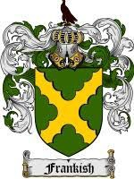

Romersk Kejsare, Frankisk Kung m.m Se notering!. Blev 54 år.
823-06-13 Frankfurt am Main, Tyskland. [1]
877-10-06 Avrieux, Frankrike. [1]
King Charles II *The Bald* of The FranksPrint Family Tree
Born 13 June 823 - Frankfurt am Main, Hesse, Germany
Deceased 6 October 877 - Mont Cenis, Brides-les-Bain, France, aged 54 years old
Parents
King Louis I *The Pious* of the Franks, Holy Roman Emperor 778-840
Judith Of Bavaria-Altdorf ca 800-843
Spouses and children
With Richildis Of Metz 849-914 (Parents : Count Buvinus (Bivin) Of Metz 810-869 & Richilda Of Arles ca 820-) with
F Princess Rothild of Holy Roman Empire 871-927 With Comte de Maine Roger De Ponthieu ca 866-
Princess Rothild of Holy Roman Empire 871-927 With Count de Bourges Hugh II d' Alsace Of Tours ca 862-892
M Prince Drogo of Holy Roman Empire 872-
M Prince Pipin of Holy Roman Empire 873-
M Prince Karl of Holy Roman Empire 876-
Married 13 December 842, Queercy-sur-Oise, France, to Ermentrude Of Orleans 830-869 (Parents : Count Odo I Of Orleans 798-834 & Engeltrude Of Paris †) with
F Princess Hersent Of France 865- With Count Reginar I Of Hainaut 846-915
M King Louis II *The Stammerer* of the West-Franks 846-879 Married about 875, France, to Countess Adelaide Of Paris ca 855-901/
King Louis II *The Stammerer* of the West-Franks 846-879 Married in March 862, France, to Ansgarde Of Burgundy †879/
King Louis II *The Stammerer* of the West-Franks 846-879 With Luitgarde Of Saxony
M King Charles Of Aquitaine 847..848-866
F Princess Rotrud Of France ca 850-889/ Married, Bourges, France, to Count de Bourges Hugh II d' Alsace Of Tours ca 862-892
F Princess Judith Martel of the Franks 844-870 Married 1 October 856, Verberie sur Oise, France, to King Ethelwulf Of Wessex 795-858
Princess Judith Martel of the Franks 844-870 Married, France, to Count Baldwin I Of Flanders 840-879
Princess Judith Martel of the Franks 844-870 With King Ethelbald Of Wessex 831-860
F Princess Rothilde Of France 844-ca 928 With Count Sigebert V Of Razes 840-884
F Princess Alberade Of France ca 869-
F Princess Hildegard Of France †
F Princess Irmtrud Of France †
M Prince Lothar Of France †865
M Prince Carlomann Of France †876
F Princess Gisela Of France †
Siblings
F Princess Gisela Of France ca 819-874/
Half-siblings
On the side of King Louis I *The Pious* of the Franks, Holy Roman Emperor 778-840
with Ermengarde Of Hesbaye 778-818
M Emperor Lothair I of the Holy Roman Empire 795-855
M King Pepin I Of Aquitaine ca 797-838
F Princess Hildegard (Or Matilda) Of France 800..804-
F Princess Rotrude of the Franks 800-841
M King Louis II *The German* of The East-Franks ca 806-876
F Princess Adelaide of the Franks 818-
with ? ?
M Count Arnulf Of Sens †841/
F Princess Alpais of the Franks †
(hide)
Events
13 June 823 : Birth - Frankfurt am Main, Hesse, Germany
13 June 823 : Birth
13 December 842 : Marriage (with Ermentrude Of Orleans) - Queercy-sur-Oise, France
6 October 877 : Death - Mont Cenis, Brides-les-Bain, France
Notes
Individual Note
Charles the Bald
From Wikipedia, the free encyclopedia.
Charles the Bald (Charles II of France and Holy Roman Emperor Charles II) (French: Charles le Chauve) (June 13, 823 - October 5 or 6, 877), Holy Roman Emperor and king of the West Franks, was the son of emperor Louis the Pious and his second wife Judith.
He was born on June 13, 823, when his elder brothers were already adults and had been assigned their own regna, or subkingdoms, by their father. The attempts made by Louis the Pious to assign Charles a subkingdom, first Alemannia (829), then the country between the Meuse and the Pyrenees (839), at the expense of his half-brothers Lothair and Louis the German led to a rising on the part of these two against the emperor.
The death of the emperor in 840 led to the outbreak of war between his sons. Charles allied himself with his brother Louis the German to resist the pretensions of the new emperor Lothair I, and the two allies defeated Lothair at Fontenoy-en-Puisaye on June 25, 841. In the following year, the two brothers confirmed their alliance by the celebrated oaths of Strassburg. The war was brought to an end by the treaty of Verdun in August 843. The settlement gave Charles the Bald the kingdom of the western Franks, which practically corresponded with what is now France, as far as the Meuse, the Saône and the Rhone, with the addition of the Spanish March as far as the Ebro. Louis received the eastern part of the old Empire, hence known as the East Frankish Empire. Lothair retained the imperial title and the central regions from Flanders through the Rhineland and Burgundy into northern Italy.
The first years of Charles' reign, up to the death of Lothair I in 855, were comparatively peaceful. During these years the three brothers continued the system of "confraternal government", meeting repeatedly with one another, at Koblenz (848), at Meerssen (851), and at Attigny (854). In 858, Louis the German, invited by disaffected nobles eager to oust Charles, invaded the western Frankish kingdom. Charles' was so unpopular that he was unable to summon an army, and he fled to Burgundy. He was saved only by the support of the bishops, who refused to crown Louis king, and by the fidelity of the Welfs, who were related to his mother, Judith. In 860 he in his turn tried to seize the kingdom of his nephew, Charles of Provence, but was repulsed. On the death of his nephew Lothair II in 869, Charles tried to seize Lothair's dominions, but by the treaty of Meerssen (870) was compelled to share them with Louis the German.
Besides these family disputes, Charles had to struggle against repeated rebellions in Aquitaine and against the Bretons. Led by their chiefs Nomenoë and Erispoë, who defeated the king at Ballon (845) and Juvardeil (851), the Bretons were somewhat successful. Charles also fought against the Normans, who devastated the country in the north of Gaul, the valleys of the Seine and Loire, and even up to the borders of Aquitaine. Several times Charles was forced to purchase their retreat at a heavy price. Charles led various expeditions against the invaders, and tried to put a barrier in their way by having fortified bridges built over all the rivers.
In 875, after the death of the Emperor Louis II (son of his half-brother Lothair), Charles the Bald, supported by Pope John VIII, traveled to Italy, receiving the royal crown at Pavia and the imperial insignia in Rome on (December 29). Louis the German, also a candidate for the succession of Louis II, revenged himself by invading and devastating Charles' dominions, and Charles had to return hastily to Francia. After the death of Louis the German (August 28, 876), Charles in his turn attempted to seize Louis' kingdom, but was decisively beaten at Andernach on October 8, 876. In the meantime, John VIII, menaced by the Saracens, was urging Charles to come to his defence in Italy. Charles again crossed the Alps, but this expedition was received with little enthusiasm by the nobles, and even by his brother-in-law Boso, who had been entrusted by Charles with the government of Lombardy, and they refused to join his army. At the same time Carloman, son of Louis the German, entered northern Italy. Charles, ill and in great distress, started on his way back to Gaul, but died while crossing the pass of Mont Cenis at Brides-les-Bain, France, on the 5th or 6th of October 877.
Charles was succeeded by his son, Louis, the child of Ermentrude, daughter of Odo, Count of Orleans, whom Charles had married in 842 and who had died in 869. In 870 Charles had married Richilde, who was descended from a noble family of Lorraine, but none of the children he had with her played a part of any importance. Charles seems to have been a prince of education and letters, a friend of the church, and conscious of the support he could find in the episcopate against his unruly nobles, for he chose his councillors from among the higher clergy, as in the case of Guenelon of Sens, who betrayed him, or of Hincmar of Reims.
Preceded by:
Louis the Pious King of Western Francia
843877 Succeeded by:
Louis the Stammerer
Preceded by:
Louis II Holy Roman Emperor
875877 Succeeded by:
Charles the Fat
King of Italy
875877 Succeeded by:
Carloman